<section id="main-slider" class="no-margin">
    <div class="carousel slide">
        <div class="carousel-inner">
            <div class="item active" style="background-image: url(images/slider/bg1.jpg)">
                <div class="container">
                    <div class="row slide-margin">
                        <div class="col-sm-6">
                            <div class="">
                                <h1 class="animation animated-item-1"><nobr>The Alliance for Progress</nobr></h1>
                                <h2 class="animation animated-item-2">Progressive minor parties working together to improve Australia.</h2>
                            </div>
                        </div>

                        <div class="col-sm-6 hidden-xs animation animated-item-4">
                            <div class="slider-img">
                                
                            </div>
                        </div>

                    </div>
                </div>
            </div><!--/.item-->
        </div><!--/.carousel-inner-->
    </div><!--/.carousel-->
</section><!--/#main-slider-->
